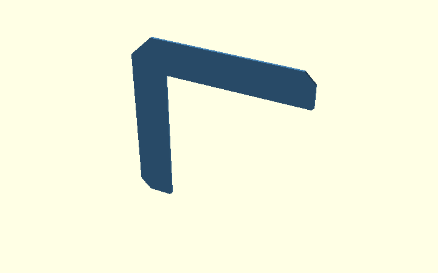
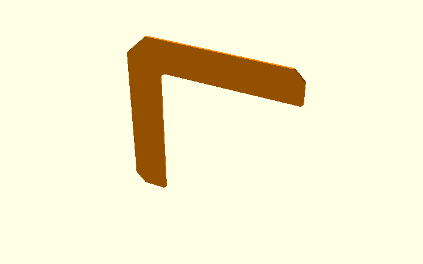
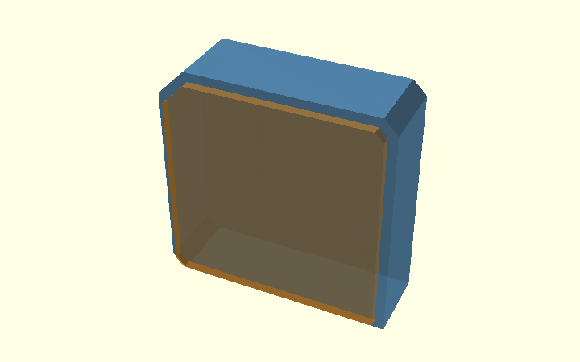
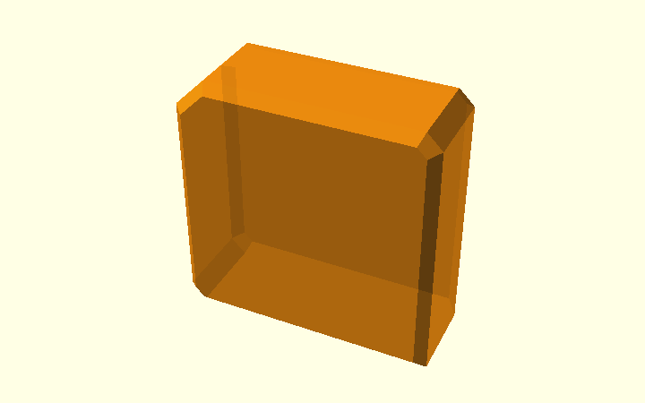
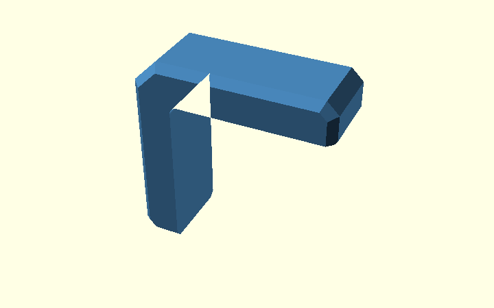

Chamfers on the Corner Bracket
This is the one detailed walkthrough of chamfers in the actual Corner Bracket model. It follows the construction order: complete 2D polygon → rounded inside corner → 3D body → outside chamfers → elephant-foot relief → corner junctions.
The Polygon Guide explains how the inside radius
is built. The Hull Guide teaches the general
hull() operation with a simple rectangular bar. This page is where
those ideas are applied to the real bracket.
| Parameter | Default | Purpose |
|---|---|---|
c |
3 mm | 45° cuts at the two arm ends, part of the original polygon |
ce |
6 mm | 45° cut at the outside corner, also part of the polygon |
cs |
2 mm | Bevel along the outside edges of the two broad printed faces |
ef |
0.6 mm | Print-bed relief along the plywood contact edges, on both printed faces |
r_in |
2 mm | Rounded inside corner of the L; not an edge chamfer |
1. The actual profile is already a complete polygon
There is no preliminary, plain L polygon in the production model.
sharp_profile() defines the entire outline of the bracket,
including the outer corner (ce), both arm-end chamfers (c) and
the short ef bevels at the wood-facing arm tips.

The critical points are already in that one polygon():
openscad
module sharp_profile() {
polygon(concat(tip_top, [
[armH, t - c], [armH - c, t], // top arm end, c
[-t + ce, t], [-t, t - ce], // outer corner, ce
[-t, -armV + c], [-t + c, -armV] // upright arm end, c
], tip_vert, [[0, 0]]));
}
The name sharp_profile() only means that its inside corner
at [0,0] is still sharp. It does not mean that its arm
ends or outside corner are unchamfered.
profile() then makes one addition to this complete polygon:
the small inside fillet made by inside_corner_2d(r_in), using a
2D square minus a circle. That fillet is added with union().
See the Polygon Guide for its construction.

The difference between these two pictures is only the small inside fillet. The arm ends and outside corner do not change.
Finally, linear_extrude(height = W, center = true) and
rotate([90,0,0]) turn this profile into a 20 mm-wide solid:
its broad printed faces lie at Y = −10 and +10 mm.

2. Outside side-edge chamfers: cs
The c and ce cuts above were drawn in 2D. The outer
side-edge bevel cs is different: it changes the 3D thickness
edges near Y = ±10.
The model constructs a temporary convex outer envelope,
outer_shape(). It deliberately fills the open inside of the L,
because this is only a helper for the outside edges.

Two overlapping solids form the input to hull():
| First input | Second input |
|---|---|
| Full outside outline | Outline inset using offset(delta = -cs) |
Width W - 2*cs = 16 mm |
Full width W = 20 mm |
| Y from −8 to +8 mm | Y from −10 to +10 mm |

openscad
module side_chamfer_env() {
rotate([90,0,0]) hull() {
linear_extrude(height=W-2*cs, center=true)
outer_shape(); // full outline, narrow Y
linear_extrude(height=W, center=true)
offset(delta=-cs) outer_shape(); // inset outline, full Y
}
}
The outer boundary moves inward by 2 mm between Y = ±8
and Y = ±10. hull() joins these boundaries with sloping
faces. The resulting helper is still convex and fills the L opening.

The next operation is essential:
intersection() with the true extruded profile() removes
the unwanted convex fill. Only the real L with its outside
side-edge bevels remains.

3. Elephant-foot relief: ef
The elephant-foot relief is the second hull-based operation in the bracket, but its construction is now documented in one dedicated place:
Elephant-foot relief — complete step-by-step guide
That page deliberately uses a fixed whole-bracket view and contains two parallel sequences:
- A: the two main EF hulls without the arm-tip correction;
- B: the same steps again, followed by the small working arm-tip correction.
Only after A and B are established does that page zoom into one tip and test whether the correction can be absorbed into the original two hull surfaces.
The production model itself remains simple:
```openscad module chamfered_body() { difference() { body();
if (ef > 0) {
inside_relief_envelope();
if (ef_corner_correction)
relief_corner_miters();
}
}
} ```
Use ef_corner_correction = false to inspect the model with only the
two main EF hulls. Use true for the current working geometry.
5. What is checked, and what is not
The CI test verify-elephant-foot-hull.sh compares the
complete bracket with the former per-edge relief implementation,
including its mounting holes. A second check isolates the
four arm-tip junctions. Both tests passed for the supported
parameter combinations in PR #10.
The geometry has not yet been physically test-printed; clearance, strength and the visual quality of every bevel still need checking.
For a first introduction to hull(), continue with the
short Hull Guide. For the mathematical
construction of the inside radius, use the
Polygon Guide.